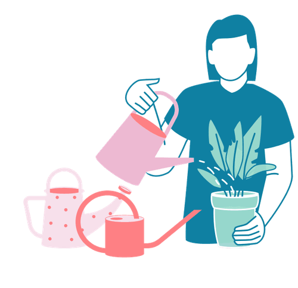

Mit der Academy erhaltet ihr im Business-Plan praxisnahe Lernmodule rund um Facilitation und wirksame Transformation.
Gemeinsam mit 9 Spaces zeigt Plan International Deutschland, wie wertebasiertes Arbeiten Orientierung gibt – nach innen wie nach außen.

Dieses Tool hilft euch dabei, eure Kolleg*innen besser zu verstehen und gezielt Wertschätzung für sie auszudrücken.
Ein Tool, das euch hilft, durch wertschätzenden Austausch euer Teamgefühl zu stärken
Ein Tool, das euch dabei hilft, Wertschätzung zu formulieren und zur Routine zu machen.
Für das eigene Wohlbefinden kann es sinnvoll sein, eine Liste mit Ereignissen zu führen, auf die man positiv zurückblickt.